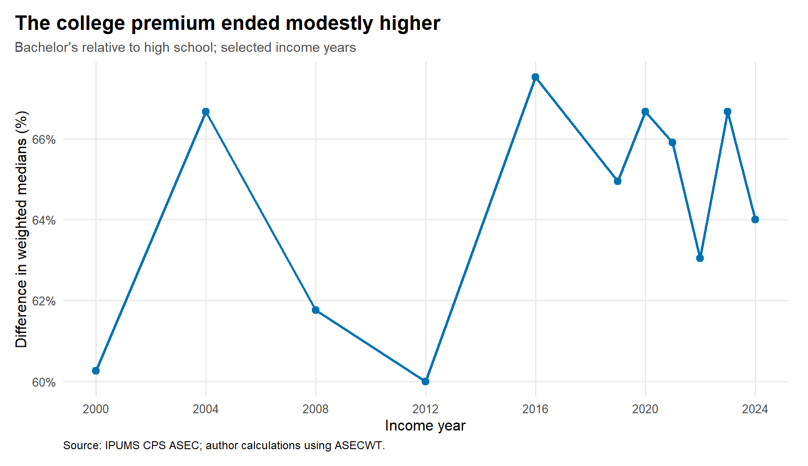
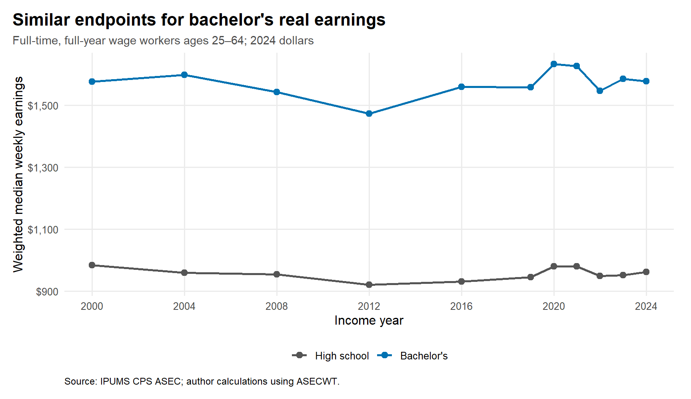
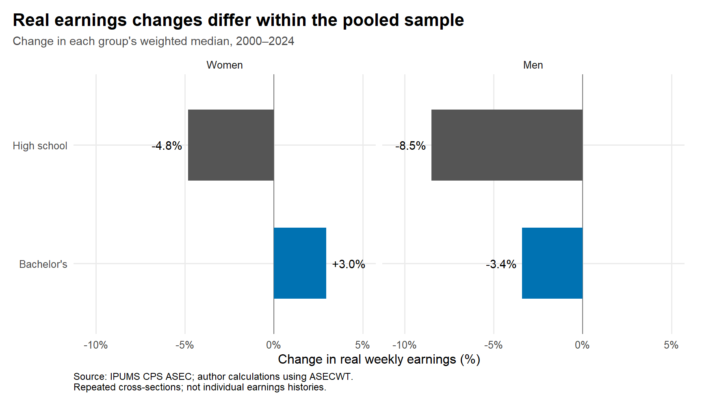

A Bigger College Earnings Premium Without Bigger Paychecks?
data visualization
IPUMS CPS
labor market
education
CPS data show why a larger relative earnings advantage need not mean a large gain in college graduates’ purchasing power.
A university degree can provide an earnings advantage even when graduates’ pay barely increases. That distinction matters when interpreting claims about the financial value of college: earning more than another group is different from being able to buy more than earlier graduates. Did a larger college earnings premium between 2000 and 2024 mean that bachelor’s graduates earned substantially more in real terms?
In this CPS comparison, the answer is no. The relative gap widened modestly, while the pooled median for bachelor’s graduates ended almost where it began. The three figures separate the relative comparison from purchasing power, then check whether the pooled result describes women and men equally well.
The relative advantage became slightly larger
I define the premium as the weighted median weekly earnings of bachelor’s graduates divided by the corresponding high-school median, minus one. A 60% premium means the bachelor’s median is 1.6 times the high-school median; it does not mean college raises every student’s earnings by 60%.
Figure 1 puts the premium at 60.3% in 2000 and 64.0% in 2024, an increase of 3.7 percentage points. The intervening observations fluctuate, so the endpoints should not be described as a steady rise.
A bigger ratio need not mean a bigger paycheck

The bachelor’s median moved from $1,576 to $1,577 per week, a real change of only 0.1%. The high-school median fell from $983 to $962, or 2.2%.
These endpoints explain the apparent puzzle. A nearly unchanged numerator divided by a smaller denominator produces a larger relative premium. College graduates retained a sizable earnings advantage, but that advantage is not evidence of a large gain in their purchasing power over this period. This is an arithmetic description of group medians, not an explanation of what caused either group’s earnings to change.
For a reader thinking about living standards, the dollar series is the relevant check: it puts both years on the same purchasing-power scale. The percentage premium instead answers how far apart two groups are. Neither measure alone tells us whether tuition was worthwhile, because these data do not include students’ costs or their alternative career paths.
The pooled result is not everyone’s experience

For women, the bachelor’s median increased 3.0%, while the high-school median declined 4.8%. For men, both fell: 3.4% for bachelor’s graduates and 8.5% for high-school graduates. A relative advantage can therefore widen even when both comparison groups lose purchasing power.
By 2024, the within-sex premiums were 73.1% for women and 72.7% for men: very close. Without uncertainty estimates, that small difference should not be presented as a clear gender difference. The figures also do not follow the same workers over time or establish individual career paths.
What the figures can tell us
The sample uses IPUMS CPS ASEC wage and salary workers ages 25–64 who worked 50–52 weeks and usually at least 35 hours weekly. Income refers to the preceding calendar year; annual wage income is divided by weeks worked. Every median uses the person weight ASECWT. Published CPI99 factors, stored in the code, express earnings in 2024 dollars; the extract does not need a CPI99 variable.
These restrictions exclude people with absent or unstable employment. Changing group composition, top coding, nonresponse and sampling error can affect medians. The comparison does not control for occupation, experience, college costs or selection into education, and cannot measure college’s causal return.
The takeaway: check both the earnings gap and the earnings levels. A larger relative college advantage can coexist with little improvement in graduates’ real median pay. It answers a different question from whether college paid off for a particular student.
Code, data definitions and replication instructions accompany the article; raw IPUMS microdata require separate access.
R data-preparation code
find_ipums_extract <- function(raw_dir = "data/raw") {
xml <- list.files(raw_dir, pattern = "\\.xml$", full.names = TRUE,
ignore.case = TRUE)
data <- list.files(raw_dir, pattern = "\\.(dat|csv)\\.gz$", full.names = TRUE,
ignore.case = TRUE)
if (length(xml) != 1 || length(data) != 1) {
stop(
"Place exactly one IPUMS DDI .xml file and its matching .dat.gz ",
"(or .csv.gz) file in data/raw. See README.md."
)
}
list(xml = xml, data = data)
}
classify_education <- function(x) {
labels <- as.character(haven::as_factor(x, levels = "labels"))
dplyr::case_when(
stringr::str_detect(labels, stringr::regex(
"high school (diploma|graduate)|GED|equivalent", ignore_case = TRUE
)) ~ "High school",
stringr::str_detect(labels, stringr::regex(
"some college|associate", ignore_case = TRUE
)) ~ "Some college / associate",
stringr::str_detect(labels, stringr::regex(
"bachelor", ignore_case = TRUE
)) ~ "Bachelor's",
stringr::str_detect(labels, stringr::regex(
"master|professional school|doctor", ignore_case = TRUE
)) ~ "Advanced degree",
TRUE ~ NA_character_
)
}
classify_sex <- function(x) {
labels <- as.character(haven::as_factor(x, levels = "labels"))
dplyr::case_when(
stringr::str_detect(labels, stringr::regex("female", ignore_case = TRUE)) ~ "Women",
stringr::str_detect(labels, stringr::regex("male", ignore_case = TRUE)) ~ "Men",
TRUE ~ NA_character_
)
}
load_and_prepare_cps <- function(raw_dir = "data/raw") {
files <- find_ipums_extract(raw_dir)
required <- c(
"YEAR", "ASECWT", "AGE", "SEX", "EDUC", "INCWAGE", "WKSWORK1",
"UHRSWORKLY"
)
cps <- ipumsr::read_ipums_micro(
files$xml,
vars = required,
data_file = files$data,
verbose = FALSE
)
names(cps) <- tolower(names(cps))
missing <- setdiff(tolower(required), names(cps))
if (length(missing) > 0) {
stop("The IPUMS extract is missing: ", paste(toupper(missing), collapse = ", "))
}
cps <- cps |>
dplyr::mutate(
year = as.integer(year),
income_year = year - 1L,
education = classify_education(educ),
sex_group = classify_sex(sex),
age = as.numeric(age),
asecwt = as.numeric(asecwt),
incwage = as.numeric(incwage),
wkswork1 = as.numeric(wkswork1),
uhrsworkly = as.numeric(uhrsworkly)
)
# IPUMS CPS CPI99 factors convert prior-year income to constant 1999 dollars.
# Keeping this small published lookup in the script avoids requiring CPI99 in
# the user's extract. The selected ASEC years are documented in README.md.
cpi99_lookup <- c(
`2001` = 0.967,
`2005` = 0.882,
`2009` = 0.774,
`2013` = 0.726,
`2017` = 0.694,
`2020` = 0.652,
`2021` = 0.644,
`2022` = 0.615,
`2023` = 0.569,
`2024` = 0.547,
`2025` = 0.531
)
lookup_years <- as.integer(names(cpi99_lookup))
# Only keep years covered by the documented inflation factors.
ignored_years <- setdiff(sort(unique(cps$year)), lookup_years)
if (length(ignored_years) > 0) {
message("Ignoring years without a CPI99 factor: ",
paste(ignored_years, collapse = ", "))
}
cps <- dplyr::filter(cps, year %in% lookup_years)
cps$cpi99_factor <- unname(cpi99_lookup[match(cps$year, lookup_years)])
prepared <- cps |>
dplyr::filter(
age >= 25, age <= 64,
wkswork1 >= 50, wkswork1 <= 52,
uhrsworkly >= 35, uhrsworkly < 999,
incwage > 0, incwage < 99999999,
is.finite(asecwt), asecwt > 0,
!is.na(education), !is.na(sex_group),
is.finite(cpi99_factor), cpi99_factor > 0
) |>
dplyr::mutate(
# CPI99 converts nominal income to 1999 dollars. Dividing by the
# 2025-ASEC factor (0.531) converts 1999 dollars to 2024 dollars.
weekly_earnings = incwage * cpi99_factor / 0.531 / wkswork1,
education = factor(
education,
levels = c(
"High school", "Some college / associate", "Bachelor's",
"Advanced degree"
)
),
sex_group = factor(sex_group, levels = c("Women", "Men")),
age_band = cut(
age,
breaks = c(25, 30, 35, 40, 45, 50, 55, 60, 65),
right = FALSE,
labels = c(
"25–29", "30–34", "35–39", "40–44",
"45–49", "50–54", "55–59", "60–64"
)
)
)
if (nrow(prepared) == 0) {
stop("No usable observations remain. Check the selected ASEC samples and variables.")
}
if (dplyr::n_distinct(prepared$income_year) < 3) {
stop("Select at least three ASEC sample years; the README recommends eleven.")
}
if (!all(levels(prepared$education) %in% unique(as.character(prepared$education)))) {
stop("Not all four education groups were found. Check EDUC labels in the extract.")
}
attr(prepared, "latest_dollar_year") <- 2024L
prepared
}R analysis and visualization code
# Person-level ASEC medians: weights, not observation counts, determine rank.
weighted_median <- function(x, w) {
keep <- is.finite(x) & is.finite(w) & w > 0
x <- x[keep]
w <- w[keep]
if (length(x) == 0) return(NA_real_)
ord <- order(x)
x <- x[ord]
w <- w[ord]
x[which(cumsum(w) >= sum(w) / 2)[1]]
}
weighted_summary <- function(data, ...) {
data |>
dplyr::group_by(...) |>
dplyr::summarise(
median_weekly = weighted_median(weekly_earnings, asecwt),
weighted_population = sum(asecwt),
observations = dplyr::n(),
.groups = "drop"
)
}
# All plots and ratios use these weighted summaries. Keeping this step separate
# also lets a reader check the published calculations from aggregate CSV files.
make_cps_outputs <- function(trend, by_sex, dollar_year, results_dir = "results") {
dir.create(results_dir, recursive = TRUE, showWarnings = FALSE)
degrees <- c("High school", "Bachelor's")
first_year <- min(trend$income_year)
latest_year <- max(trend$income_year)
if (first_year == latest_year) stop("At least two income years are needed.")
comparison <- trend |>
dplyr::filter(education %in% degrees) |>
dplyr::mutate(education = factor(education, levels = degrees))
by_sex <- by_sex |>
dplyr::filter(education %in% degrees) |>
dplyr::mutate(
education = factor(education, levels = degrees),
sex_group = factor(sex_group, levels = c("Women", "Men"))
) |>
dplyr::select(income_year, sex_group, education, median_weekly)
overall_premium <- comparison |>
dplyr::select(income_year, education, median_weekly) |>
tidyr::pivot_wider(names_from = education, values_from = median_weekly) |>
dplyr::mutate(premium_pct = 100 * (`Bachelor's` / `High school` - 1)) |>
dplyr::arrange(income_year)
gender_premium <- by_sex |>
tidyr::pivot_wider(names_from = education, values_from = median_weekly) |>
dplyr::mutate(premium_pct = 100 * (`Bachelor's` / `High school` - 1)) |>
dplyr::arrange(income_year, sex_group)
overall_change <- comparison |>
dplyr::group_by(education) |>
dplyr::summarise(
first_median = median_weekly[income_year == first_year],
latest_median = median_weekly[income_year == latest_year],
.groups = "drop"
) |>
dplyr::mutate(
first_year = first_year,
latest_year = latest_year,
change_pct = 100 * (latest_median / first_median - 1)
)
sex_change <- by_sex |>
dplyr::group_by(sex_group, education) |>
dplyr::summarise(
first_median = median_weekly[income_year == first_year],
latest_median = median_weekly[income_year == latest_year],
.groups = "drop"
) |>
dplyr::mutate(
first_year = first_year,
latest_year = latest_year,
change_pct = 100 * (latest_median / first_median - 1),
change_label = sprintf("%+.1f%%", change_pct),
label_x = change_pct + ifelse(change_pct >= 0, 0.3, -0.3),
label_hjust = ifelse(change_pct >= 0, 0, 1)
)
if (nrow(overall_change) != 2 || nrow(sex_change) != 4 ||
any(!is.finite(overall_premium$premium_pct)) ||
any(!is.finite(gender_premium$premium_pct)) ||
any(!is.finite(overall_change$change_pct)) ||
any(!is.finite(sex_change$change_pct))) {
stop("An education/sex comparison is missing. Check the extract.")
}
palette <- c("High school" = "#555555", "Bachelor's" = "#0072B2")
years <- seq(first_year, latest_year, by = 4)
source_note <- "Source: IPUMS CPS ASEC; author calculations using ASECWT."
base_theme <- ggplot2::theme_minimal(base_size = 12) +
ggplot2::theme(
plot.title.position = "plot",
plot.title = ggplot2::element_text(face = "bold", size = 16),
plot.subtitle = ggplot2::element_text(color = "grey30", size = 11),
plot.caption = ggplot2::element_text(size = 9, hjust = 0),
panel.grid.minor = ggplot2::element_blank(),
legend.position = "bottom",
legend.title = ggplot2::element_blank(),
plot.margin = ggplot2::margin(12, 16, 12, 12)
)
premium_plot <- ggplot2::ggplot(
overall_premium, ggplot2::aes(income_year, premium_pct)
) +
ggplot2::geom_line(linewidth = 1, color = "#0072B2") +
ggplot2::geom_point(size = 2.5, color = "#0072B2") +
ggplot2::scale_x_continuous(breaks = years) +
ggplot2::scale_y_continuous(
labels = scales::label_percent(scale = 1, accuracy = 1)
) +
ggplot2::labs(
title = "The college premium ended modestly higher",
subtitle = "Bachelor's relative to high school; selected income years",
x = "Income year", y = "Difference in weighted medians (%)",
caption = source_note
) + base_theme
earnings_plot <- ggplot2::ggplot(
comparison, ggplot2::aes(income_year, median_weekly, color = education)
) +
ggplot2::geom_line(linewidth = 1) +
ggplot2::geom_point(size = 2.5) +
ggplot2::scale_color_manual(values = palette) +
ggplot2::scale_x_continuous(breaks = years) +
ggplot2::scale_y_continuous(labels = scales::label_dollar(accuracy = 1)) +
ggplot2::labs(
title = "Similar endpoints for bachelor's real earnings",
subtitle = paste0("Full-time, full-year wage workers ages 25–64; ",
dollar_year, " dollars"),
x = "Income year", y = "Weighted median weekly earnings",
caption = source_note
) + base_theme
# Facets share an axis, so bar lengths are comparable across sex groups.
change_limits <- range(c(0, sex_change$change_pct)) + c(-2, 2)
sex_change_plot <- ggplot2::ggplot(
sex_change, ggplot2::aes(change_pct, education, fill = education)
) +
ggplot2::geom_vline(xintercept = 0, color = "grey50", linewidth = 0.5) +
ggplot2::geom_col(width = 0.6) +
ggplot2::geom_text(
ggplot2::aes(x = label_x, label = change_label, hjust = label_hjust),
size = 3.8, show.legend = FALSE
) +
ggplot2::facet_wrap(~ sex_group, nrow = 1) +
ggplot2::scale_fill_manual(values = palette) +
ggplot2::scale_y_discrete(limits = rev(degrees)) +
ggplot2::scale_x_continuous(
labels = scales::label_percent(scale = 1, accuracy = 1),
limits = change_limits
) +
ggplot2::labs(
title = "Real earnings changes differ within the pooled sample",
subtitle = paste0("Change in each group's weighted median, ",
first_year, "–", latest_year),
x = "Change in real weekly earnings (%)", y = NULL,
caption = paste0(source_note, "\nRepeated cross-sections; not individual earnings histories.")
) + base_theme + ggplot2::theme(legend.position = "none")
readr::write_csv(trend, file.path(results_dir, "earnings_by_education.csv"))
readr::write_csv(by_sex, file.path(results_dir, "earnings_by_sex.csv"))
readr::write_csv(overall_premium, file.path(results_dir, "college_premium.csv"))
readr::write_csv(gender_premium, file.path(results_dir, "college_premium_by_sex.csv"))
readr::write_csv(overall_change, file.path(results_dir, "earnings_change_overall.csv"))
readr::write_csv(
dplyr::select(sex_change, -change_label, -label_x, -label_hjust),
file.path(results_dir, "earnings_change_by_sex.csv")
)
ggplot2::ggsave(file.path(results_dir, "01_college_premium.png"), premium_plot,
width = 9, height = 5.2, dpi = 220, bg = "white")
ggplot2::ggsave(file.path(results_dir, "02_real_earnings.png"), earnings_plot,
width = 9, height = 5.2, dpi = 220, bg = "white")
ggplot2::ggsave(file.path(results_dir, "03_earnings_change_by_sex.png"), sex_change_plot,
width = 9, height = 5.2, dpi = 220, bg = "white")
writeLines(capture.output(sessionInfo()), file.path(results_dir, "sessionInfo.txt"))
list(
trend = trend, overall_premium = overall_premium,
gender_premium = gender_premium, overall_change = overall_change,
sex_change = sex_change, premium_plot = premium_plot,
earnings_plot = earnings_plot, sex_change_plot = sex_change_plot,
first_year = first_year, latest_year = latest_year, dollar_year = dollar_year
)
}
analyze_cps <- function(cps, results_dir = "results") {
trend <- weighted_summary(cps, income_year, education)
by_sex <- weighted_summary(cps, income_year, sex_group, education)
make_cps_outputs(trend, by_sex, attr(cps, "latest_dollar_year"), results_dir)
}